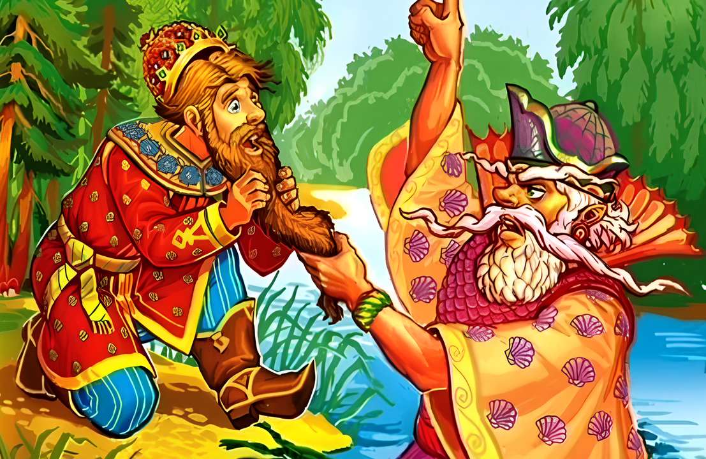

Морской царь и Василиса Премудрая

За тридевять земель, в тридесятом государстве жил-был царь с царицею; детей у них не было. Поехал царь по чужим землям, по дальним сторонам, долгое время домой не бывал; на ту пору родила ему царица сына, Ивана-царевича, а царь про то и не ведает.
Стал он держать путь в свое государство, стал подъезжать к своей земле, а день-то был жаркий-жаркий, солнце так и пекло! И напала на него жажда великая;что ни дать, только бы воды испить! Осмотрелся кругом и видит невдалеке большое озеро; подъехал к озеру, слез с коня, прилег на землю и давай глотать студеную воду. Пьет и не чует беды; а царь морской ухватил его за бороду.
— Пусти! — просит царь.
— Не пущу, не смей пить без моего ведома!
— Какой хочешь возьми откуп—только отпусти!
— Давай то, чего дома не знаешь.
Царь подумал-подумал… Чего он дома не знает? Кажись, все знает, все ему ведомо, — и согласился. Попробовал бороду — никто не держит; встал с земли, сел на коня и поехал восвояси.
Вот приезжает домой, царица встречает его с царевичем, такая радостная, а он как узнал про свое милое детище, так и залился горькими слезами. Рассказал царице, как и что с ним было, поплакали вместе, да ведь делать-то нечего, слезами дела не поправишь.
Стали они жить по-старому; а царевич растет себе да растет, словно тесто на опаре, — не по дням, а по часам, — и вырос большой.
«Сколько ни держать при себе, — думает царь, — а отдавать надобно: дело неминучее!» Взял Ивана-царевича за руку, привел прямо к озеру.
— Поищи здесь, — говорит, — мой перстень; я ненароком вчера обронил.
Оставил одного царевича, а сам повернул домой. Стал царевич искать перстень, идет по берегу, и попадается ему навстречу старушка.
— Куда идешь, Иван-царевич?
— Отвяжись, не докучай, старая ведьма! И без тебя досадно.
— Ну, оставайся с богом!
И пошла старушка в сторону.
…А Иван-царевич пораздумался: «За что обругал я старуху? Дай ворочу ее; старые люди хитры и догадливы! Авось что и доброе скажет». И стал ворочать старушку:
— Воротись, бабушка, да прости мое слово глупое! Ведь я с досады вымолвил: заставил меня отец перстень искать, хожу-высматриваю, а перстня нет как нет!
— Не за перстнем ты здесь: отдал тебя отец морскому царю; выйдет морской царь и возьмет тебя с собою в подводное царство.
Горько заплакал царевич.
— Не тужи, Иван-царевич! Будет и на твоей улице праздник; только слушайся меня, старуху. Спрячься вон за тот куст смородины и притаись тихохонько. Прилетят сюда двенадцать голубиц — всё красных девиц, а вслед за ними и тринадцатая; станут в озере купаться; а ты тем временем унеси у последней сорочку и до тех пор не отдавай, пока не подарит она тебе своего колечка. Если не сумеешь этого сделать, ты погиб навеки; у морского царя кругом всего дворца стоит частокол высокий, на целые на десять верст, и на каждой спице по голове воткнуто; только одна порожняя, не угоди на нее попасть!
Иван-царевич поблагодарил старушку, спрятался за смородиновый куст и ждет поры-времени.
Вдруг прилетают двенадцать голубиц; ударились о сыру землю и обернулись красными девицами, все до единой красоты несказанной: ни вздумать, ни взгадать, ни пером написать! Поскидали платья и пустились в озеро: играют, плещутся, смеются, песни поют.
Вслед за ними прилетела и тринадцатая голубица; ударилась о сыру землю, обернулась красной девицей, сбросила с белого тела сорочку и пошла купаться; и была она всех пригожее, всех красивее!
Долго Иван-царевич не мог отвести очей своих, долго на нее заглядывался да припоминал, что говорила ему старуха, подкрался тихонько и унес сорочку.
Вышла из воды красная девица, хватилась — нет сорочки, унес кто-то; бросились все искать; искали, искали — не видать нигде.
— Не ищите, милые сестрицы! Улетайте домой; я сама виновата—недосмотрела, сама и отвечать буду. Сестрицы—красные девицы ударились о сыру землю, сделались голубицами, взмахнули крыльями и полетели прочь. Осталась одна девица, осмотрелась кругом и промолвила:
— Кто бы ни был таков, у кого моя сорочка, выходи сюда; коли старый человек — будешь мне родной батюшка, коли средних лет — будешь братец любимый, коли ровня мне — будешь милый друг!
Только сказала последнее слово, показался Иван-царевич. Подала она ему золотое колечко и говорит:
— Ах, Иван-царевич! Что давно не приходил? Морской царь на тебя гневается. Вот дорога, что ведет в подводное царство; ступай по ней смело! Там и меня найдешь; ведь я дочь морского царя, Василиса Премудрая.
Обернулась Василиса Премудрая голубкою и улетела от царевича.
А Иван-царевич отправился в подводное царство; видит — и там свет такой же, как у нас; и там поля, и луга, и рощи зеленые, и солнышко греет.
Приходит он к морскому царю. Закричал на него морской царь:
— Что так долго не бывал? За вину твою вот тебе служба: есть у меня пустошь на тридцать верст и в длину и поперек — одни рвы, буераки да каменье острое! Чтоб к завтрему было там как ладонь гладко, и была бы рожь посеяна, и выросла б к раннему утру так высока, чтобы в ней галка могла схорониться. Если того не сделаешь — голова твоя с плеч долой!
Идет Иван-царевич от морского царя, сам слезами обливается. Увидала его в окно из своего терема высокого Василиса Премудрая и спрашивает:
— Здравствуй, Иван-царевич! Что слезами обливаешься?
— Как же мне не плакать? — отвечает царевич. — Заставил меня царь морской за одну ночь сровнять рвы, буераки и каменья острые и засеять рожью, чтоб к утру она выросла и могла в ней галка спрятаться.
— Это не беда, беда впереди будет. Ложись с богом спать, утро вечера мудренее, все будет готово!
Лег спать Иван-царевич, а Василиса Премудрая вышла на крылечко и крикнула громким голосом:
— Гей вы, слуги мои верные! Ровняйте-ка рвы глубокие, сносите каменья острые, засевайте рожью колосистою, чтоб к утру поспела.
Проснулся на заре Иван-царевич, глянул — все готово: нет ни рвов, ни буераков, стоит поле как ладонь гладкое, и красуется на нем рожь — столь высока, что галка схоронится.
Пошел к морскому царю с докладом.
— Спасибо тебе, — говорит морской царь, — что сумел службу сослужить. Вот тебе другая работа: есть у меня триста скирдов, в каждом скирду по триста копен — все пшеница белоярая; обмолоти мне к завтрему всю пшеницу чисто-начисто, до единого зернышка, а скирдов не ломай и снопов не разбивай. Если не сделаешь — голова твоя с плеч долой!
— Слушаю, ваше величество! — сказал Иван-царевич; опять идет по двору да слезами обливается.
— О чем горько плачешь? — спрашивает его Василиса Премудрая.
— Как же мне не плакать? Приказал мне царь морской за одну ночь все скирды обмолотить, зерна не обронить, а скирдов не ломать и снопов не разбивать.
— Это не беда, беда впереди будет! Ложись спать с богом; утро вечера мудренее.
Царевич лег спать, а Василиса Премудрая вышла на крылечко и закричала громким голосом:
— Гей вы, муравьи ползучие! Сколько вас на белом свете ни есть — все ползите сюда и повыберите зерно из батюшкиных скирдов чисто-начисто.
Поутру зовет морской царь Ивана-царевича:
— Сослужил ли службу?
— Сослужил, ваше величество!
— Пойдем посмотрим.
Пришли на гумно — все скирды стоят нетронуты, пришли в житницы — все закрома полнехоньки зерном.
— Спасибо тебе, брат! — сказал морской царь.
— Сделай мне еще церковь из чистого воску, чтобы к рассвету была готова; это будет твоя последняя служба.
Опять идет Иван-царевич по двору и слезами умывается.
— О чем горько плачешь? — спрашивает его из высокого терема Василиса Премудрая.
— Как мне не плакать, доброму молодцу? Приказал морской царь за одну ночь сделать церковь из чистого воску.
— Ну, это еще не беда, беда впереди будет. Ложись-ка спать; утро вечера мудренее.
Царевич улегся спать, а Василиса Премудрая вышла на крылечко и закричала громким голосом:
— Гей вы, пчелы работящие! Сколько вас на белом свете ни есть, все летите стада и слепите из чистого воску церковь божию, чтоб к утру ‘была готова.
Поутру встал Иван-царевич, глянул — стоит церковь из чистого воску, и пошел к морскому царю с докладом.
— Спасибо тебе, Иван-царевич! Каких слуг у меня ни было, никто не сумел так угодить, как ты. Будь же за то моим наследником, всего царства сберегателем, выбирай себе любую из тринадцати дочерей моих в жены.
Иван-царевич выбрал Василису Премудрую; тотчас их обвенчали и на радостях пировали целых три дня.
Ни много ни мало прошло времени, стосковался Иван-царевич по своим родителям, захотелось ему на святую Русь.
— Что так грустен, Иван-царевич?
— Ах, Василиса Премудрая, взгрустнулось по отцу, по матери, захотелось на святую Русь.
— Вот это беда пришла! Если уйдем мы, будет за нами погоня великая; морской царь разгневается и предаст нас смерти. Надо ухитряться!
Плюнула Василиса Премудрая в трех углах, заперла двери в своем тереме и побежала с Иваном-царевичем на святую Русь.
На другой день ранехонько приходят посланные от морского царя — молодых подымать, во дворец к царю звать. Стучатся в двери:
— Проснитеся, пробудитеся! Вас батюшка зовет.
— Еще рано, мы не выспались: приходите после! — отвечает одна слюнка.
Вот посланные ушли, обождали час-другой и опять стучатся:
— Не пора-время спать, пора-время вставать!
— Погодите немного: встанем, оденемся! — отвечает вторая слюнка.
В третий раз приходят посланные:
— Царь-де морской гневается, зачем так долго они прохлаждаются.
— Сейчас будем! — отвечает третья слюнка.
Подождали-подождали посланные и давай опять стучаться: нет отклика, вет отзыва! Выломали двери, а в тереме пусто.
Доложили дарю, чаю молодые убежали; озлобился он и послал за ними погоню великую.
А Василиса Премудрая с Иваном-царевичем уже далеко-далеко! Скачут на борзых конях без остановки, без роздыху.
Ну-ка, Ивав-царевич, припади к сырой земле да послушай, нет ли погони от морского царя?
Иван-царевич соскочил с коня, припал ухом к сырой землу и говорит:
— Слышу я людскую молвь и конский топ!
— Это за нами гонят! — сказала Василиса Премудрая и тотчас обратила коней зеленым лугом, Ивана-царевича — старым пастухом, а сама сделалась смирною овечкою.
Наезжает погоня:
— Эй, старичок! Не видал ли ты — не проскакал ли здесь добрый молодец с красной девицей?
— Нет, люди добрые, не видал, — отвечает Иван-царевич, — сорок лет, как пасу на этом месте, — ни одна птица мимо не пролетывала, ни один зверь мимо не прорыскивал!
Воротилась погоня назад:
— Ваше царское величество! Никого в пути не наехали, видали только: пастух овечку пасет.
— Что ж не хватали? Ведь это они были! — закричал морской царь и послал новую погоню.
А Иван-царевич с Василисою Премудрою давным-давно скачут на борзых конях.
— Ну, Иван-царевич, припади к сырой земле да послушай, нет ли погони от морского царя?
Иван-царевич слез с коня, припал ухом к сырой земле и говорит:
— Слышу я людскую молвь и конский топ.
— Это за нами гонят! — сказала Василиса Премудрая; сама сделалась церковью, Ивана-царевича обратила стареньким попом, а лошадей — деревьями.
Наезжает погоня:
— Эй, батюшка! Не видал ли ты, не проходил ли здесь пастух с овечкою?
— Нет, люди: добрые, не видал; сорок лет тружусь в этой церкви — ни одна птица мимо не пролетала, ни один зверь мимо не прорыскивал.
Повернула погоня назад:
— Ваше царское величество! Нигде не нашли пастуха с овечкою; только в пути и видели, что церковь да попа-старика.
— Что же вы церковь не разломали, попа не захватили? Ведь это они самые были! — закричал морской царь и сам поскакал вдогонь за Иваном-царевичем и Василисою Премудрою.
А они далеко уехали.
Опять говорит Василиса Премудрая:
— Иван-царевич! Припади к сырой земле — не слыхать ли погони?
Слез Иван-царевич с коня, припал ухом к сырой земле и говорит:
— Слышу я людскую молвь и конский топ пуще прежнего.
— Это сам царь скачет.
Оборотила Василиса Премудрая коней озером, Ивана-царевича — селезнем, а сама сделалась уткою.
Прискакал царь морской к озеру, тотчас догадался, кто таковы утка и селезень; ударился о сыру землю и обернулся орлом. Хочет орел убить их до смерти, да не тут-то было: что не разлетится сверху… вот-вот ударит селезня, а селезень в воду нырнет; вот-вот ударит утку, а утка в воду нырнет! Бился, бился, так ничего не смог сделать. Поскакал царь морской в свое подводное царство, а Василиса Премудрая с Иваном-царевичем выждали доброе время и поехали на святую Русь.
Долго ли, коротко ли, приехали они в тридесятое царство.
— Подожди меня в этом лесочке, — говорит Иван-царевич Василисе Премудрой, — я пойду доложусь наперед отцу, матери.
— Ты меня забудешь, Иван-царевич!
— Нет, не забуду.
— Нет, Иван-царевич, не говори, позабудешь! Вспомни обо мне хоть тогда, как станут два голубка в окна биться!
Пришел Иван-царевич во дворец; увидали его родители, бросились ему на шею и стали целовать-миловать его; на радостях позабыл Иван-царевич про Василису Премудрую.
Живет день и другой с отцом, с матерью, а на третий задумал свататься к какой-то королевне.
Василиса Премудрая пошла в город и нанялась к просвирне в работницы. Стали просвиры готовить; она взяла два кусочка теста, слепила пару голубков и посадила в печь.
— Разгадай, хозяюшка, что будет из этих голубков?
— А что будет? Съедим их — вот и все!
— Нет, не угадала!
Открыла Василиса Премудрая печь, отворила окно — и в ту ж минуту голуби встрепенулися, полетели прямо во дворец и начали биться в окна; сколько прислуга царская ни старалась, ничем не могла отогнать прочь.
Тут только Иван-царевич вспомнил про Василису Премудрую, послал гонцов во все концы расспрашивать да разыскивать и нашел ее у просвирни; взял за руки белые, целовал в уста сахарные, привел к отцу, к матери, и стали все вместе жить да поживать да добра наживать.